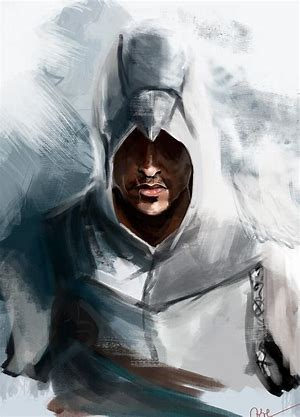
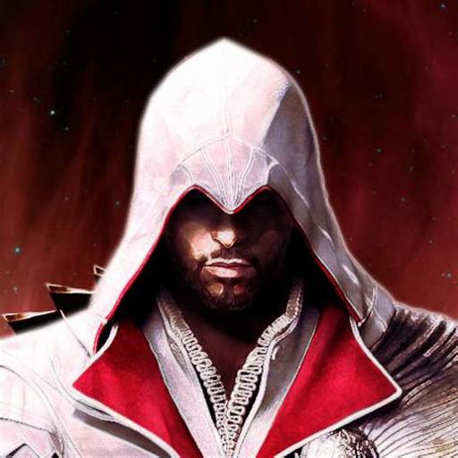
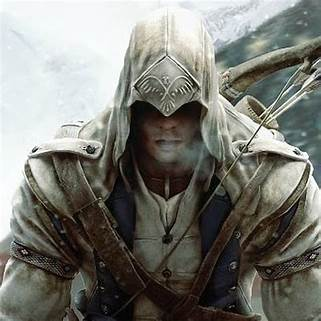
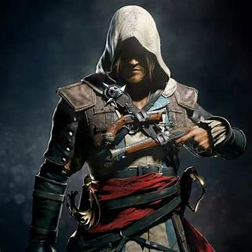
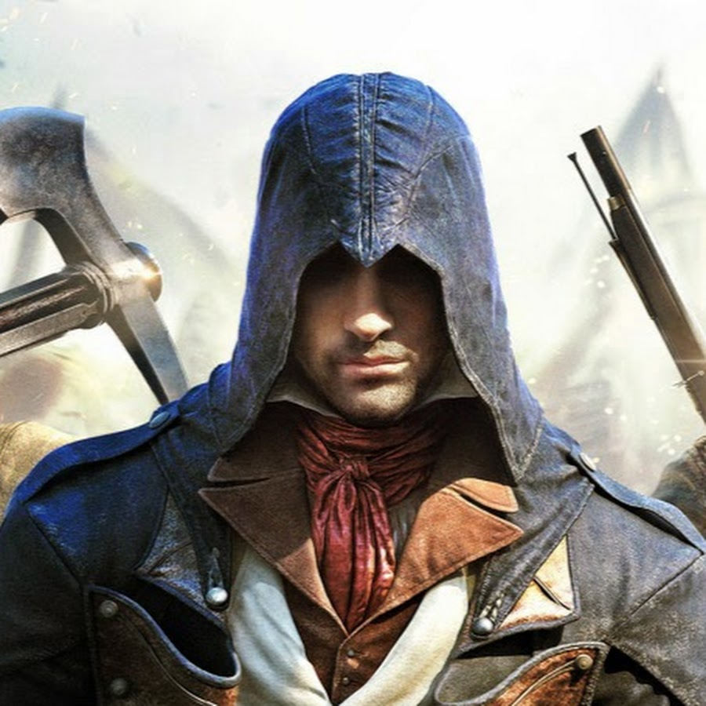

Characters

- Altaïr Ibn-La'Ahad: Master Assassin and Redemption Seeker
Altaïr Ibn-La'Ahad: Master Assassin and Redemption Seeker
Altaïr, nicknamed "The Eagle" for his agility and precision, is the charismatic yet troubled protagonist of the first Assassin's Creed game. Born into the Assassin Brotherhood, Altaïr's arrogance and recklessness
lead to a critical mission failure and the death of his mentor. Stripped of his rank and forced to confront his flaws, Altaïr embarks on a journey of redemption, tasked with eliminating nine key Templar targets to regain his honor.
-
Skills:
- Eagle Vision: Altaïr can "see" through walls and identify targets, granting him a tactical advantage in combat and infiltration.
- Master Strategist: Altaïr meticulously plans his missions, analyzing targets and environments to ensure success.
- Stoicism: Altaïr maintains a calm and collected demeanor, rarely betraying his emotions even in the face of danger.
- Disarm: Altaïr can skillfully disarm opponents, leaving them vulnerable for a swift takedown.
-
Weapons:
- Single Hidden Blade: The iconic weapon of the early Assassins, demanding precision and calculated strikes.
- Sword and Shield: Altaïr utilizes a more defensive style, often opting for parries and counters during combat.
- Throwing Knives: A reliable ranged option for taking down enemies from afar or disrupting patrols.

-
Ezio Auditore da Firenze: A Charismatic Assassin's Journey
Ezio Auditore, emblazoned against the backdrop of Renaissance Italy, is the charming and captivating protagonist of the Assassin's Creed II trilogy. Witnessing his family's tragic betrayal ignites a fiery vendetta within him, propelling him into the
hidden world of the Assassin Brotherhood. But Ezio's journey is far from simple revenge. It's a transformative tapestry woven with passion, loss, redemption, and ultimately, becoming the embodiment of the Assassin's ideals.
-
Skills:
- Acrobatics: Ezio's athleticism and parkour skills surpass Altaïr's, allowing him to traverse environments with unmatched fluidity and grace.
- Disguise: Ezio can blend into crowds using various costumes and personas, infiltrating enemy strongholds with ease.
- Leadership: Ezio rallies allies to his cause, building a network of informants and supporters throughout his journey.
- Diplomacy: Ezio utilizes wit and charisma to manipulate situations and navigate political intrigue.
-
Weapons:
- Double Hidden Blade: Unlike Altaïr's single blade, Ezio wields one on each wrist, granting him unmatched close-combat agility and allowing for dual assassinations.
- Sword and Dagger: Ezio often employs a classic swordsman's combination, offering flexibility and power in combat.
- Footblade: A hidden blade disguised as a boot knife, ideal for surprise attacks and silent takedowns.

-
Connor Kenway: A Warrior Forged in Wilderness and Revolution
Born of two worlds, Connor Kenway stands tall as a figure of raw power and unwavering conviction in Assassin's Creed III.
His journey, set against the backdrop of the American Revolution, paints a captivating portrait of a warrior straddling the lines of tradition and destiny.
Trained in the ways of the Kanien'kehá:ka (Mohawk) people, Connor's physical prowess is unmatched. He wields his tomahawk with devastating efficiency, navigates the wilderness with the instincts of a predator, and commands respect even from the fiercest beasts.
-
Skills:
- Animal Taming: Can befriend and command various animals, including bears and wolves, for combat support and exploration assistance. An entirely new element not seen in Altaïr and Ezio's skillset.
- Survivalist: Master of tracking, crafting, and hand-to-hand combat. Adapts to the harsh frontier environment, contrasting with the urban focus of Altaïr and Ezio.
- Eagle Vision: Similar to Altaïr, but enhanced with the ability to sense and track animals, showcasing his connection to nature.
- Traversal: Can effectively traverse environment in the wild, surpassing Ezio and Altaïr in traversal greatly
-
Weapons:
- Tomahawk: Connor's signature weapon, a versatile axe used for both throwing and close-combat strikes. Offers raw power and brutality compared to the finesse of hidden blades.
- Hunting Bow and Rifle: Masterful hunter, Connor utilizes firearms for long-range stealth takedowns, a stark contrast to Altaïr and Ezio's primarily close-quarters approach.
- Rope Dart: A ranged weapon perfect for disarming or pulling enemies, adding a strategic element to combat.

-
Edward Kenway: Pirate, Rogue, Reluctant Assassin
Hoist the Jolly Roger and dive into the thrilling tale of Edward Kenway, captain of his own destiny in Assassin's Creed IV: Black Flag. Edward isn't your typical Assassin.
He's a charismatic scoundrel, driven by greed for gold and glory, who stumbles into the ancient conflict between Assassins and Templars amidst the roiling waves of the Golden Age of Piracy.
Freedom and fortune guide Edward's compass. He commands his ship, the Jackdaw, with unparalleled skill, carving a bloody swathe through the Caribbean, plundering riches, and carving his own legend.
-
Skills:
- Expert Sailor: Expert sailor and tactician, Edward commands his own pirate ship, the Jackdaw, utilizing it for exploration, combat, and resource acquisition. A stark contrast to the land-centric focus of earlier Assassins.
- Swimmer: Adept underwater navigation and combat, allowing him to explore shipwrecks and eliminate targets silently from unexpected angles. A unique skill absent in Altaïr and Ezio's repertoire.
- Brawler: Skilled in hand-to-hand combat, using his brute strength and street smarts to overcome opponents, a departure from the more calculated approach of his predecessors.
-
Weapons:
- Dual Cutlass Swords: Edward's preferred tools for close-quarters combat, offering swift swings and powerful attacks, a departure from the hidden blades favored by Altaïr and Ezio.
- Pistols: Masterful marksman, Edward utilizes flintlock pistols for ranged takedowns and tactical advantages, reflecting the evolving weaponry of the Golden Age of Piracy.
- Boarding Axe: A brutal weapon for ship-to-ship combat, used for breaking through defenses and wreaking havoc upon enemy vessels.

-
Arno Dorian: A Prodigal Son Ascending the Parisian Shadows
Step into the turbulent streets of Revolutionary Paris and meet Arno Dorian, Assassin's Creed Unity's captivating protagonist.
His story is one of loss, vengeance, and ultimately, reclaiming his place within the ancient brotherhood.
Born into nobility, Arno's life takes a tragic turn, forcing him to flee into the Parisian underworld. This fuels a burning desire for redemption, shaping his journey.
Arno's journey mirrors the French Revolution's ideals. He fights for equality, justice, and brotherhood, uniting various factions within the Assassin Order to combat Templar conspiracies.
-
Skills:
- Parkour Master: Arno navigates the dense, vertical city of Paris with unparalleled grace and agility, showcasing a refined mastery of parkour techniques.
- Adaptive Combat: Arno seamlessly transitions between swordplay, gunplay, and stealth tactics, adapting to different situations and enemy types with fluid efficiency.
- Cooperative Skills: Arno excels in teamwork, coordinating attacks and strategies with fellow Assassins, highlighting the importance of unity in the game's narrative and gameplay.
-
Weapons:
- Phantom Blade:A compact and concealable wrist-mounted crossbow, capable of silent ranged assassinations and a variety of specialized bolts. This innovation signals a shift towards stealth and precision in Arno's approach.
- Swords And Pistols Arno seamlessly blends swordplay with firing pistols, creating a dynamic and deadly combat style that emphasizes speed and adaptability. This reflects the evolution of weaponry during the French Revolution.
- Hidden Blades: Classic Assassin weapons, Arno wields them with lethal precision, but their use is often secondary to his other tools, suggesting a subtle evolution in Assassin techniques.